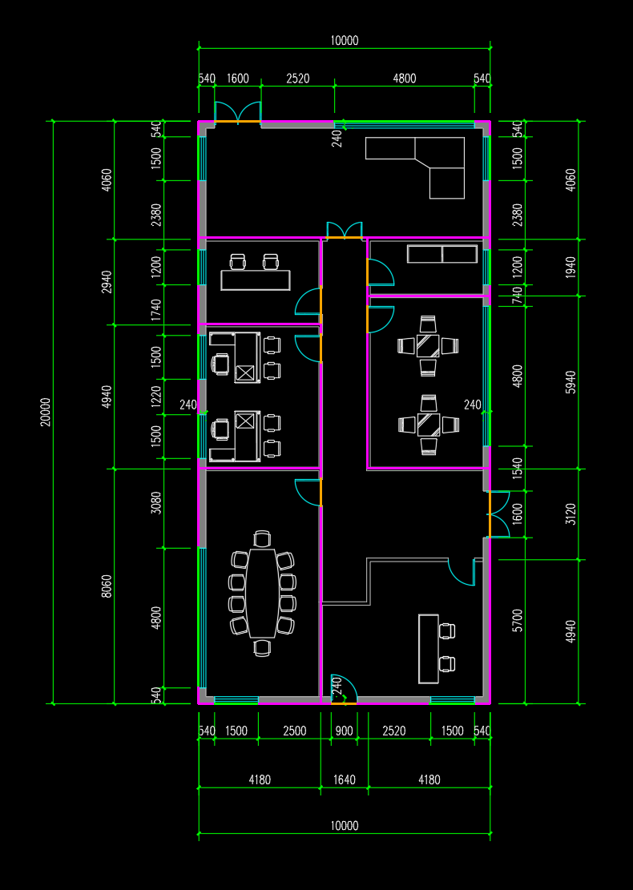
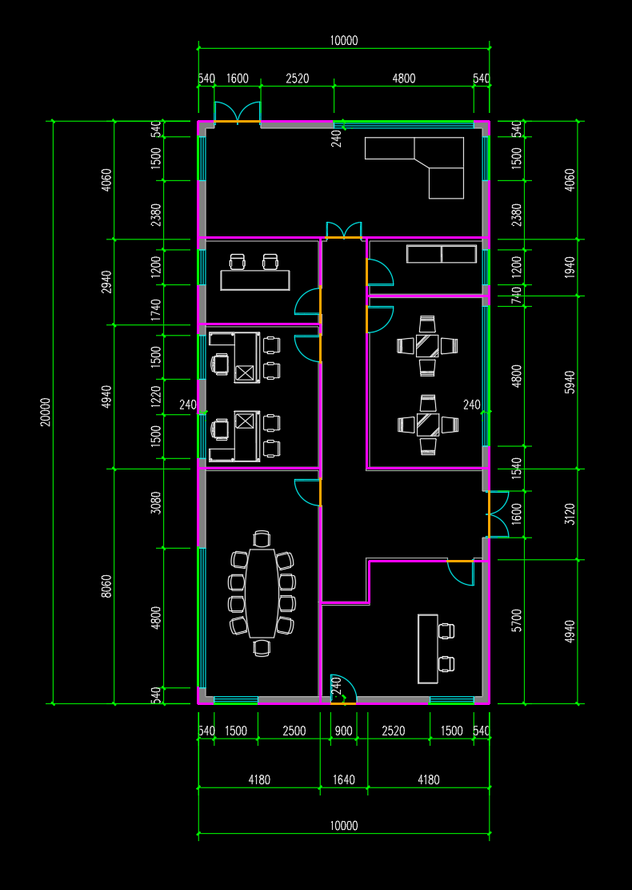
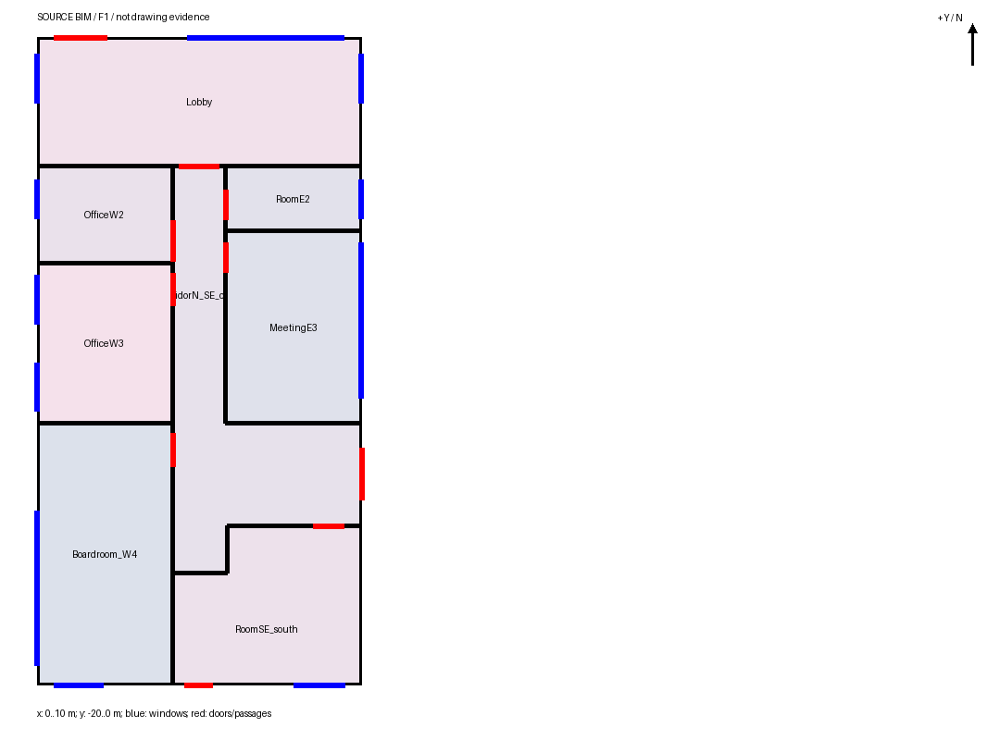

东南折角隔墙与内门已恢复，原合并区域被正确分为走廊和东南房间；最终8空间/54面/11窗/10门。旧门窗位置和其他房间保持，整案仍有墙位及门窗高度偏差，未判整体通过。
从上轮已修东侧开口的墙网恢复，开发侧限定检查区域；原五图与建筑声明保留，生成时无GT或正确坐标。耗时373.23秒。
旋转查看实际模型 · 范围与验证 · 改动范围核验 · 质量结论


IoU为面积交并比，越接近1越一致。仅按原图总长声明[0,20,0]平移，没有拟合GT；整案状态仍为severe。
| 实际空间 | 面积交并比 | 最大边界偏差 | 评价 |
|---|---|---|---|
| RoomSE_south | 0.9895 | 0.0644 m | severe |
| CorridorN_SE_open | 0.9847 | 0.0710 m | severe |
单个空间表示外门；两个空间表示室内连接。原门顶点保持情况由范围核验单独记录。
| 门 | 原空间 | 当前空间 |
|---|---|---|
| D_SE_divider | None | ['CorridorN_SE_open', 'RoomSE_south'] |
| SD1_door | ['CorridorN_SE_open'] | ['RoomSE_south'] |

独立核验仅在生成结束后运行。源自洽与离线可查看不等于整楼保真通过。